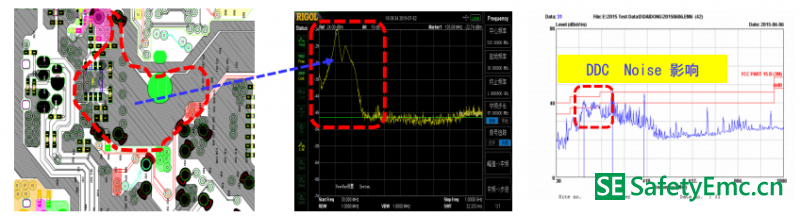
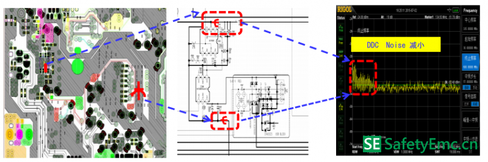
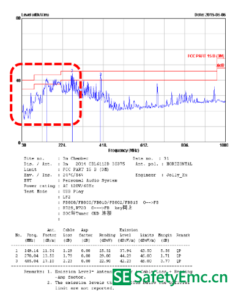
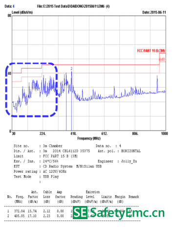

一、现象描述
此产品为便携式音箱，产品具有AUX , USB , CD 功能。产品在做FCC Part 15B 辐射测试时，发现100-200MHz 余量不足。经过各个功能状态的对比发现，USB Play 状态最为严重。整改首先从USB Play 状态入手。
二、整改思路
从测试曲线上可以看出，曲线是宽带干扰引起，只有大电流的器件，才会引起宽带超标。通过频谱分析探测到，USB 工作时，DDC IC工作是大电流器件， 会产生很强的干扰。整改在DDC IC VCC与GND 追加磁珠，从而减小对外界的辐射。
USB Play : 电路PCB 图，探测波形及测试数据如下：
DDC 回路影响：低频Noise 影响，辐射曲线明显飘高。

整改后:VCC ,GND 磁珠追加（选择磁珠时要注意满足大电流需求，要确保电流在1A以上）

USB Play: （整改后面完整测试数据）
对策前：Margin 1.71 dB

对策后：Margin :4.47 dB
